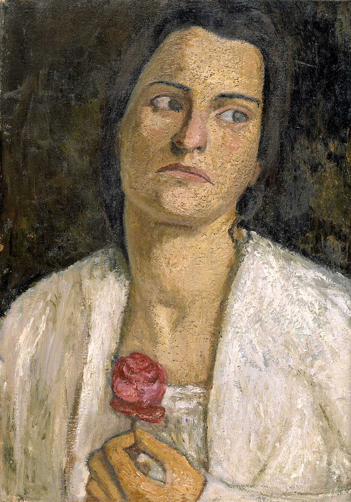

Clara Rilke-Westhoff
Rodzice Clary — Friedrich Westhoff, zamożny kupiec bremeński oraz jego druga żona Johanna — starali się rozwinąć talent artystyczny, jakim obdarzona była ich córka. Westhoff w wolnych chwilach z pasją oddawał się malarstwu, jego żona natomiast prowadziła zgoła niekonwencjonalny tryb życia, znajdując upodobanie w rozrywkach na wolnym powietrzu oraz jeździe na bicyklu.
Portret Clary Rilke-Westhoff pędzla Pauli Modersohn-Becker, 1905, Hamburger Kunsthalle
Zamożna rodzina Westhoffów mogła sobie pozwolić na finansowanie studiów córki. Mając siedemnaście lat, Clara rozpoczęła trzyletnią naukę w szkołach artystycznych Monachium i Dachau; w 1895 r. zwiedziła monachijską wystawę Sezession oraz międzynarodową wystawę, która stała się pierwszym sukcesem grupy artystów z Worpswede.
Mackensen, będąc nie tylko malarzem, lecz także rzeźbiarzem, od razu właściwie ocenił jej uzdolnienia i nauczył ją podstaw modelunku. Clara zdołała zaskarbić sobie przyjaźń Pauli Becker; często rysowały razem tego samego modela, wspólnie spędzały też większość wolnego czasu.
Rok później Paula odwiedziła Clarę w Lipsku, gdzie rzeźbiarka przez kilka tygodni pobierała nauki u Maxa Klingera, po czym, na przełomie roku podążyły razem do Paryża, jako że Clara postanowiła podjąć w Académie Julian studia z zakresu anatomii — studia niedostępne dla kobiet w ówczesnych Niemczech.
Dzięki listom polecającym od Maxa Klingera Clara miała sposobność odwiedzić Auguste’a Rodina w jego atelier przy rue de l’Université oraz przez pewien czas pracować pod kierunkiem mistrza, który czasem sam przeprowadzał korektę jej prac. Wrażenia, jakie Paula i Clara wyniosły tamtego lata z pobytu w Paryżu, a w szczególności ich odkrycie malarstwa Cézanne’a, dały im po powrocie do Worpswede poczucie zadowolenia i wewnętrznej harmonii.